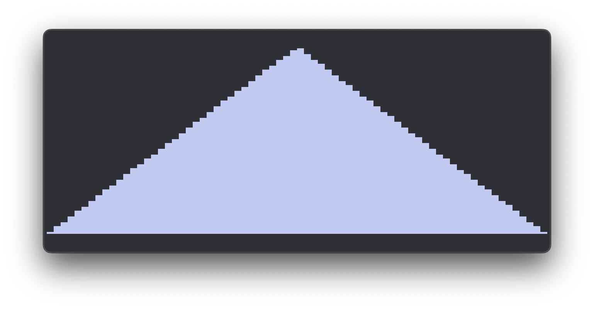
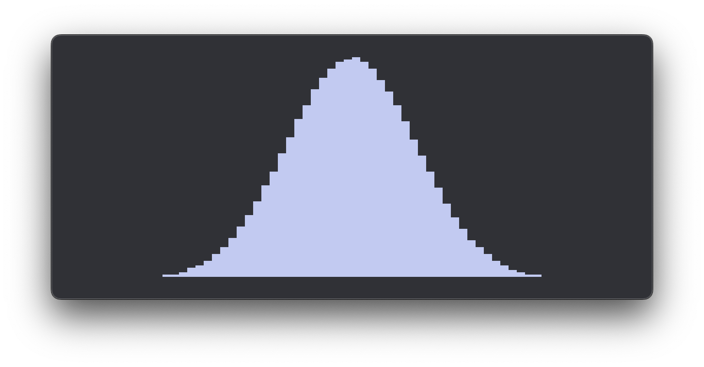
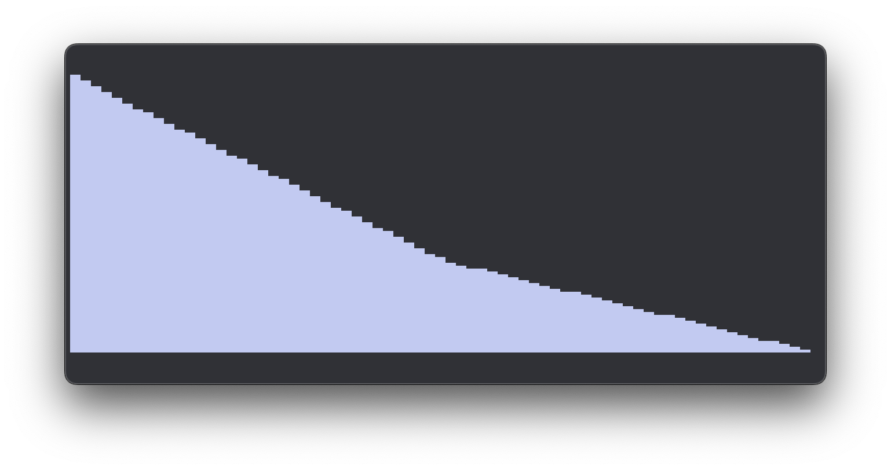

The Ziggurat method
In this article I document my journey down the Gaussian random numbers rabbit hole.
Gaussian random numbers
While creating the RNG library, I knew it had to have an rng_norm() function to sample
random numbers from a normal distribution.
Gaussian (or normal) random numbers are a very common type of random number. You need them to initialise neural network weights for example.
So I created a basic rng_norm() function using a trick I learned from throwing dice:
If you throw two or more dice, and take the sum, the mean will be more common than the outliers.
For example: When you throw 2 dice, the mean is 7, which has a probability of 1/6. The outliers 2 and 12 have a probability of 1/36.
The central limit theorem
The probability distribution of two dice looks pyramid shaped. If you sum two random floats between 0-1, you'll get a similar distribution:

But as the sample size increases, the distribution starts to approach a bell curve. This is the idea of the central limit theorem.
It turns out if you take 12 random floats in range [0-1), like this:
static inline float rng_norm(void) {
float result = -6.0f;
for (size_t i = 0; i < 12; ++i) {
result += rng_f();
}
return result;
}
...you end up with a standard deviation of 1. And the histogram looks a lot like the classic bell curve:

The more random numbers you sample, the closer you get to a true normal distribution. So 12 is not giving us a "true" normal distribution. Even though the mean is 0.0 and the standard deviation is exactly 1.0.
So if summing 12 random floats doesn't result in true accurate normal distribution, how can we "measure" the quality of the curve?
Kurtosis
There is another way to measure a distribution besides mean and standard deviation: kurtosis. The "kurtosis" measures the "tails" of a distribution. The way it's calculated is very similar to variance.
The variance is the average of all squared deviations (taking them to the 2nd power). The kurtosis is the average of all deviations to the 4th power.
This is what the calculation for both looks like in C:
double var = 0.0;
double kur = 0.0;
for (size_t i = 0; i < SAMPLE_COUNT; ++i) {
double dev = buffer[i] - mean;
double dev_sq = dev * dev;
var += dev_sq;
kur += dev_sq * dev_sq;
}
var /= SAMPLE_COUNT;
kur /= SAMPLE_COUNT;
This means that kurtosis is very sensitive to the tails of the distribution. The samples close to the mean contribute relatively little to the final number.
So what is the kurtosis of our rng_norm() function when it sums up 12 random floats?
It turns out to be exactly 2.9 in the limit. When we take 10 million random samples
that's usually where it lands.
The kurtosis of a "true" normal distribution is exactly 3.0. So although it's not far off, we can tell it's not perfect.
Because of a kurtosis of 3 being exactly Gaussian, a common way to represent the "excess kurtosis" is by subtracting 3 This way, a 0 excelss kurtosis means a perfect Gaussian distribution. Our function is giving a -0.1 which means the tails are too "thin".
We can improve the kurtosis by taking a lot more than 12 samples. Here are a few results:
| Samples | Kurtosis |
|---|---|
| 12 | -0.10 |
| 16 | -0.08 |
| 32 | -0.04 |
| 64 | -0.02 |
| 128 | -0.01 |
As you can see, it gets better, but we are trading accuracy for performance. So let's benchmark the run time as well to see how much time we're spending.
Benchmarking performance
I'm using clock_gettime_nsec_np() to measure the elapsed nanoseconds. It simply
returns the nanoseconds as a single uint64_t. So let's do that before and after the
loop, and take 10 million samples in between.
#define SAMPLE_COUNT (10 * 1000 * 1000)
uint64_t sample_start_ns = clock_gettime_nsec_np(CLOCK_MONOTONIC);
for (size_t i = 0; i < SAMPLE_COUNT; ++i) {
buffer[i] = rng_norm();
}
uint64_t sample_time_ns = clock_gettime_nsec_np(CLOCK_MONOTONIC) - sample_start_ns;
double ns_per_sample = (double)sample_time_ns / SAMPLE_COUNT;
printf("sample time: %.2f ns\n", ns_per_sample);
Turns out it takes around 12 nanoseconds per rng_norm() call (which uses 12 rng_f()
samples). So that's about 1 ns per rng_f() call.
Increasing the samples increases run time more or less linearly.
So this is our baseline:
- Accuracy: -0.1
- Time: 12 ns
Let's look at alternatives and see if we can improve on this.
Rejection sampling
There are many alternative ways to achieve Gaussian RNG. One very simple approach is rejection sampling.
This is a very simple and flexible approach. As long as you can specify your probability distribution as a function that maps x to y, you can sample from it.
The way it works is:
- Get a random x sample in the range you want to sample
- Get a random y sample from 0 to the max of the probability density function
- If the y sample is under the curve at x, you accept the sample, and return x. If not, you go back to step 1 and repeat.
We can implement this to see how well it performs. The probability density of a standard normal distribution is e^(-x²/2). It peaks at exactly 1, which is convenient, because then our y sample is just a random float between 0 and 1:
#define CUTOFF 3.0f
static inline float prob_dens(float x) { return expf(-0.5f * x * x); }
float rng_norm_new(void) {
for (;;) {
float x = -CUTOFF + rng_f() * 2.0f * CUTOFF;
float y = rng_f();
if (y < prob_dens(x)) {
return x; // Accept
}
}
}
There is one variable we have to choose up front: The x range. Let's start with a range of [-3.0, 3.0].
This gives us a kurtosis of -0.17 and a sample time of 39 ns. If we want a better kurtosis, we have to include more of the tails, so increase the x range.
If we try a range from -6.0 to 6.0 for example, the kurtosis becomes 0.00. That's perfect, as far as I can measure.
The problem with this method is the "repeat" step. If a sample gets rejected, you have
to start over. Every round costs two calls to rng_f() because we need x and y.
As we increase the x range, efficiency goes down. We reject a higher % of samples and have to try again a lot more. The sample time goes up to 43 ns for the range [-6, 6].
Here's how sample time scales with range, where a range of [-3.0, 3.0] is measured as 6.0:
| Range | Sample time [ns] | Excess kurtosis |
|---|---|---|
| 2.0 | 7.9 | -2.8354 |
| 4.0 | 26.0 | -1.5831 |
| 8.0 | 39.1 | -0.0205 |
| 16.0 | 46.0 | 0.0040 |
| 32.0 | 61.0 | 0.0007 |
Divide and conquer
Rejection sampling seems like a bad idea, but there are some things we can do to make it more efficient. This is where the Ziggurat method comes in.
The first principle of the Ziggurat method reminds me a lot of divide and conquer, which is an approach many algorithms use for optimisation.
We can divide our 2D sample area into horizontal layers. Then we can resize these layers such that they "hug" the probability distribution. This allows us to throw away a lot of "dead" space that only held rejected samples anyways.
I'm going to take a very simple probability function, the "pyramid shape". And I'm only going to focus on the positive side of the x axis. So we're looking at the 2D domain of x: [0, 1] y: [0, 1].
Let's try to run the code this way. We have to introduce this concept of layers. The new approach will add a new step. Besides only picking a random x and y, we need to pick, a layer as well.
I specify the layers by the points where they touch the curve. Two layers need three points. The x of a point is the width of the layer above it, and the difference between two y values is the height of a layer.
So let's pick a random layer 50/50, pick x, pick y, and see if we accept the sample or reject it. If we reject it, we try again:
#define LAYER_COUNT 2
const float lay_xs[] = {1.0f, 0.5f, 0.0f};
const float lay_ys[] = {0.0f, 0.5f, 1.0f};
static inline float prob_dens(float x) { return 1.0f - x; }
float rng_norm_new(void) {
for (;;) {
uint32_t lay_ix = rng_u() % LAYER_COUNT;
float x = rng_f() * lay_xs[lay_ix];
float lay_h = lay_ys[lay_ix + 1] - lay_ys[lay_ix];
float y = lay_ys[lay_ix] + rng_f() * lay_h;
if (y < prob_dens(x)) {
return x; // Accept
}
}
}
Let's look at the histogram after picking 10 million of these samples:

Something seems off..
Why the area matters
We have two layers of different areas, but we're picking them 50/50. This results in an uneven distribution of samples:
Here the top layer area is half the bottom layer area. But because we pick layers with 50/50 chance, we end up cramming the same amount of samples in the layer with half the area. (Doubling the density of samples in the top layer). This leads to an uneven distribution, breaking the pyramid shape.
The probability of picking a layer should be proportional to its area. So either we change our probabilities, or the areas.
Picking layers with equal probability is very nice and fast, so I'd say we try to make the layers equal area.
The way I want to do this, is not by figuring out the equations for the areas of each layer, and solving for equality. I'd much rather use a numerical method.
Bisection method to find the area
It's quite easy to pick an estimate of an area, and find out whether it's too big or to small.
So to find the right area, I want to start with an upper and lower bound. Then take the midpoint (average) and test whether it's too small or too big. This determines our new area bounds. And we repeat. This is called the bisection method.
The only thing we need is an initial bound for the area. So we need a number that we know for sure is smaller than the actual area, and we need a number that we know for sure is larger.
The lower bound is easy: zero. For the upper bound, I take the whole box we're sampling
from (X_LIM * Y_LIM) and divide it by the number of layers. All the layers together
can never be bigger than that box.
So say we have a certain area we want to test. How do we check if the area is too large or too small?
Inverse of the probability density function
The approach goes as follows. Our x_lim point determines the lower right corner of our first layer:
Because the layer starts at x = 0, the width of the first layer is equal to x_lim.
The area is known, because that's what we're testing. So it follows that the height of the layer is simply: height = area / width.
That's the first layer done.
What's the width of the second layer? We know at what value of y the base starts. The width is simply the width of the probability density at that y value.
That's where we need the inverse of the probability density function. Normally you plug in an x and get out a y. Now we have a y, and we want to know which x goes with it.
For our pyramid, y = 1 - x. The inverse happens to be the same: x = 1 - y.
For the normal distribution it takes a bit more work. We start with y = e^(-x²/2). Take the natural log on both sides, multiply by -2, and take the square root. That gives us x = √(-2 ln y).
static inline float prob_dens(float x) { return expf(-0.5f * x * x); }
static inline float prob_dens_inv(float y) { return sqrtf(-2.0f * logf(y)); }
Don't worry about the negative under the square root: ln y is negative for every y between 0 and 1, so it all works out.
Now we know the width of the second layer. And since every layer has the same area, we also know its height. We keep doing this, layer after layer, until we have the full staircase.
Then we look at where the top layer ends. If it ends above the top of the curve (y = 1), our area was too big. If it ends below, our area was too small. That's the test we need for the bisection method:
#define X_LIM 8.0f
#define Y_LIM 1.0f
#define SEARCH_ROUNDS 32
float lay_xs[LAYER_COUNT + 1] = {X_LIM};
float lay_ys[LAYER_COUNT + 1] = {0.0f};
void calc_layers(void) {
float area_min = 0.0f, area_max = X_LIM * Y_LIM / LAYER_COUNT;
for (size_t i = 0; i < SEARCH_ROUNDS; ++i) {
float area = (area_min + area_max) * 0.5f;
// Figure out if our area is too big or too small
float final_height = 0.0f;
for (size_t j = 0; j < LAYER_COUNT; ++j) {
float lay_width = lay_xs[j];
float lay_height = area / lay_width;
lay_ys[j + 1] = lay_ys[j] + lay_height;
final_height = lay_ys[j + 1];
if (final_height > Y_LIM) {
break;
}
float x = prob_dens_inv(lay_ys[j + 1]);
lay_xs[j + 1] = x > X_LIM ? X_LIM : x;
}
// Update the area bounds
if (final_height > Y_LIM) {
area_max = area;
} else {
area_min = area;
}
}
// Final pass with an area that's never too small
for (size_t j = 0; j < LAYER_COUNT; ++j) {
float lay_height = area_max / lay_xs[j];
float y = lay_ys[j] + lay_height;
lay_ys[j + 1] = y > Y_LIM ? Y_LIM : y;
float x = prob_dens_inv(lay_ys[j + 1]);
lay_xs[j + 1] = x > X_LIM ? X_LIM : x;
}
}
A few details I found out the hard way:
The normal distribution never actually reaches zero, so we need a cutoff point:
X_LIM. I clamp x so no layer can ever get wider than that. Without this clamp, the
foundation of our ziggurat ends up in the wrong place, and the whole thing falls apart.
After the search, I calculate the layers one final time using area_max. An area
that's slightly too big only costs us a tiny bit of efficiency. An area that's slightly
too small cuts off the top of the curve.
And that's also why I clamp the final y to Y_LIM. Plugging a y above 1 into
prob_dens_inv() gives you a NaN.
More layers = more efficient
As you can imagine, adding more and more layers reduces the total area we're sampling from. Improving the ratio of accepted vs rejected samples.
I like to pick layer count by powers of two, because then we can use random bits to pick the layer:
#define LAYER_BITS 2
#define LAYER_COUNT (1u << LAYER_BITS)
uint32_t lay_ix = rng_u() >> (32 - LAYER_BITS);
This takes the top 2 bits of a random integer, giving us a layer index from 0 to 3. No modulo needed.
Getting the most out of a 32 bit integer
We are currently calling a lot of RNG functions when creating our sample. We could be a bit more efficient with this by combining multiple things.
When we call rng_u(), we get a random 32 bit integer, in other words: 32 random bits.
We can use those bits for different things.
We could use some bits for picking a random layer. We could use some bits for generating a random x float. And we can use one bit as the sign which makes our final sample flip with 50% chance.
So with 8 layer bits, this is how I split up the 32 bits:
It's important to never use the same bits for two different things. Otherwise we can get some weird bias in the final samples.
typedef union {
float f;
uint32_t u;
} Bits;
#define RNG_ZIG_LAY_MASK ((1u << RNG_ZIG_LAY_BITS) - 1)
uint32_t roll = rng_u();
uint32_t lay_ix = (roll >> 1) & RNG_ZIG_LAY_MASK;
Bits x;
x.f = (roll >> 9) * 0x1.0p-23f * lay_xs[lay_ix];
// ...
x.u |= roll << 31;
return x.f;
The highest 23 bits become a float between 0 and 1. We scale that by the width of the layer.
For the sign, we shift the lowest bit all the way to the left. That's exactly where the sign bit of a float lives. So we can just OR it into the float bits directly, using the same union trick from the floats article.
Refactoring into the RNG library
Now is a good time to move our experimental code into the RNG library.
For speed, we want to inline the rng_norm() function. So I'll make it a
static inline in the header. Just like we did with rng_u() and rng_f().
The coordinates of the tables will remain global variables. And I want to specify them in a separate .c file.
So in the header, I only declare them as extern. This tells the compiler they exist,
and the linker will find them later:
This C file can then be automatically "generated" by another C file.
Procedurally generating the coordinate tables
Instead of calling the calc_layers function every time we want to generate gaussian
numbers, I'd like to "pre generate" these layers.
We could move the entire calc_layers logic into a separate .c file with a separate binary, and let that binary write another .c file.
So src/rng_zig_layers_gen.c gets its own main(). It runs the same search as
calc_layers, and prints the results to stdout as valid C:
// Write the layers to stdout
printf("/* Procedurally generated by %s */\n\n", __FILE__);
printf("const float lay_xs[] = {\n");
for (size_t i = 0; i < LAYER_COUNT + 1; ++i) {
printf("%f,\n", lay_xs_loc[i]);
}
printf("};\n\n");
// ...and the same for lay_ys
Then we can pipe the output straight into src/rng/rng_zig_layers.c.
This way, we can run this, and generate our final .c file as part of the build process. We can configure this all in the Makefile.
Hooking it up to the Makefile
Because our entrypoint .c file is located in src/, the Makefile will automatically
pick this up and make its binary a target.
This target will depend on all the object files, including rng.o. Since rng.o also depends on the file that our rng_zig_layer_gen spits out, we have a circular dependency now.
So to avoid this, we can create a dedicated rule for the generator binary:
$(BIN)/rng_zig_layers_gen: $(SRC)/rng_zig_layers_gen.c $(SRC)/rng/rng.h
@mkdir -p $(@D)
$(CC) $(CFLAGS) $< -o $@
It only depends on its own .c file and the header. No library objects, so no circular dependency.
We also have to add the generated .c file to our library sources. We can't rely on the
wildcard for that, because the file might not exist yet when we run make. And we have
to make a rule to tell make how to generate this .c file:
GEN_SRCS = $(SRC)/rng/rng_zig_layers.c
LIB_SRCS = $(wildcard $(SRC)/*/*.c) $(GEN_SRCS)
$(SRC)/rng/rng_zig_layers.c: $(BIN)/rng_zig_layers_gen
$< > $@
clean-gen: clean
@rm -f $(GEN_SRCS)
The clean-gen target is a bonus. It lets us get back to a clean tree with only the
hand written sources.
With all this in place. We can simply run make and everything will be taken care of:
$ make clean-gen
$ make
cc -Wall -Wextra -O3 src/rng_zig_layers_gen.c -o bin/rng_zig_layers_gen
bin/rng_zig_layers_gen > src/rng/rng_zig_layers.c
cc -Wall -Wextra -O3 src/benchmark.c -c -MMD -o obj/benchmark.o
cc -Wall -Wextra -O3 src/plt/plt.c -c -MMD -o obj/plt/plt.o
cc -Wall -Wextra -O3 src/rng/rng.c -c -MMD -o obj/rng/rng.o
cc -Wall -Wextra -O3 src/rng/rng_zig_layers.c -c -MMD -o obj/rng/rng_zig_layers.o
cc obj/benchmark.o obj/plt/plt.o obj/rng/rng.o obj/rng/rng_zig_layers.o -o bin/benchmark
cc -Wall -Wextra -O3 src/main.c -c -MMD -o obj/main.o
cc obj/main.o obj/plt/plt.o obj/rng/rng.o obj/rng/rng_zig_layers.o -o bin/main
...
And because make knows the whole dependency chain, changing a setting in the generator
(like X_LIM) recompiles the generator, regenerates the tables, recompiles the object
file and relinks our binaries. All from a single make.
Final performance tweaks
Now, let's increase our total number of "layer bits" to 8, so we get 2^8 = 256 layers. This massively improves the efficiency, and we get ~3.5 nanoseconds per sample.
But there is another massive efficiency gain we can get. In the majority of cases when picking an x sample, we don't even have to pick a y to check if it's below the curve. We can simply check the width of our next layer, and if we're below that number, we know for a fact that we are under the curve.
So a random float sample + some math to check if we're below the probability distribution becomes a simple float comparison check:
static inline float rng_norm(void) {
Bits x;
for (;;) {
uint32_t roll = rng_u();
uint32_t lay_ix = (roll >> 1) & RNG_ZIG_LAY_MASK;
x.f = (roll >> 9) * 0x1.0p-23f * lay_xs[lay_ix];
if (x.f > lay_xs[lay_ix + 1]) {
float lay_h = lay_ys[lay_ix + 1] - lay_ys[lay_ix];
float y = lay_ys[lay_ix] + rng_f() * lay_h;
if (y > prob_dens(x.f)) {
continue; // Reject
}
}
x.u |= roll << 31;
return x.f;
}
}
Only when x lands in that small sliver to the right of the next layer, do we need a y
sample and the expf() call.
This final tweak gets us below 2 nanoseconds per sample!
There are a few more tweaks we can do to just clean up our tables: We can do all calculations in double precision. And only at the very end, write everything out as floats.
We can also increase accuracy by writing our floats in hex notation instead of regular decimal notation. This allows for specifying the float bits exactly as they are stored in memory:
printf("const float lay_xs[] = {\n");
for (size_t i = 0; i < LAYER_COUNT + 1; ++i) {
printf("%a,\n", (float)lay_xs_loc[i]);
}
printf("};\n\n");
The %a format specifier prints a float in hexadecimal. And the cast to float is
important. Without it, we'd be printing double precision values, which is just
unnecessary data for our float arrays.
The final layer coordinates will look like this:
/* Procedurally generated by src/rng_zig_layers_gen.c */
const float lay_xs[] = {
0x1p+3,
0x1.ec1894p+1,
0x1.c5161cp+1,
0x1.b0bbf2p+1,
0x1.a29e1cp+1,
// ...
};
const float lay_ys[] = {
0x0p+0,
// ...
0x1.f4429cp-1,
0x1p+0,
};
And with that, we've finished our gaussian random number generator :)